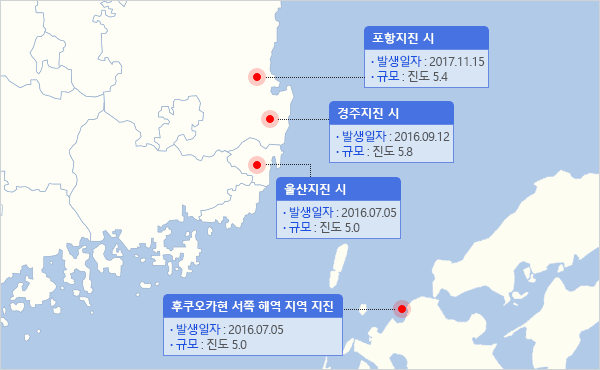
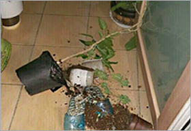

부산 지진 피해 집계 및 AI 위험성 분석 시스템
부산 지진피해 사례
부산 주요 지진

국내지진 진도값
-
포항지진
Ⅴ -
경주지진
Ⅴ -
울산지진
Ⅴ
국외 최대진도값
-
후쿠호카현
Ⅴ
-
지진 발생정보
- 발생시각
- 2017.11.15. 14:29
- 위치
- 경북 포항시 북구 북쪽 8km 지역 [36.11°N, 129.37°E]
- 규모
- 5.4
- 깊이
- 7㎞
- 최대진도
- Ⅵ
-
주요 피해사례
- 피해
- 부산 1명 경상, 경남 2건의 피해 접수(인명구조 및 안전조치)
경남지역 학교 시설물 피해 발생(학교수 10개)
포항지진 시
-
지진 발생정보
- 발생시각
- 2016.09.12. 19:44
- 위치
- 경상북도 경주시 남남서쪽 8.2km 지역 [35.76°N, 129.19°E]
- 규모
- 5.8
- 깊이
- 15㎞
- 최대진도
- Ⅳ(경주·대구), Ⅴ(부산·울산·창원)
-
주요 피해사례
- 피해
- 부산 건물 벽체 균열, 경북 아파트 천정 내장재 탈락, 경남 LG전자 물류센터 수도배관 파열
울산 LNG 복합화력 발전소 4호기 고장, 울주 변전소 변압기 1대 정지 등
경주지진 시
-
지진 발생정보
- 발생시각
- 2016.07.05 20:33
- 위치
- 울산광역시 동구 동쪽 52km 해역 [35.51°N, 129.99E]
- 규모
- 5.0
- 깊이
- 19㎞
- 최대진도
- Ⅳ(울산·부산·포항), Ⅲ(마산·대구·영천), Ⅱ(대전·경남 일부)
-
주요 피해사례
- 피해
- 부산소방본부 1천건이 넘는 신고 발생, 부산대교 상수도관 파열 및 땅 꺼짐 현상(지진 여파 추정)
-

[울산 지진으로 인한 화분 파손]
출처: 연합뉴스
울산지진 시
-
지진 발생정보
- 발생시각
- 2005.03.20 10:53
- 위치
- 일본 후쿠오카현 서쪽 해역[33.44°N, 130.10°E]
- 규모
- M 7.0
- 깊이
- 9.2㎞
- 최대진도
- IV 이상(부산ㆍ경남)
-
주요 피해사례
- 피해
- 부산에서 엘리베이터 일시 가동 중지, 부산항 하역작업 30분간 중단
후쿠오카현 서쪽 해역 지역 지진

Copyright ⓒ All Rights Reserved.